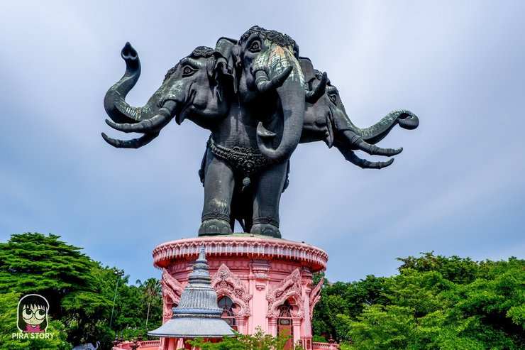
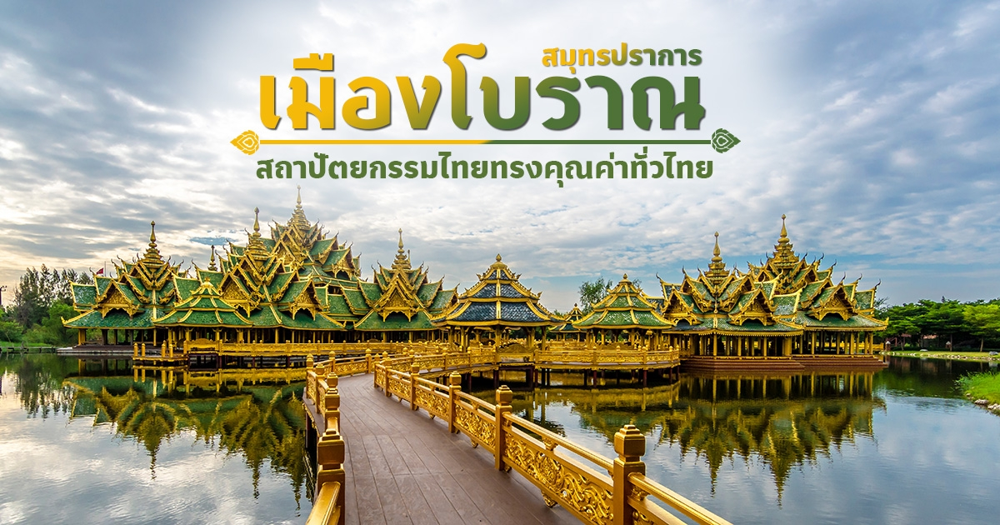
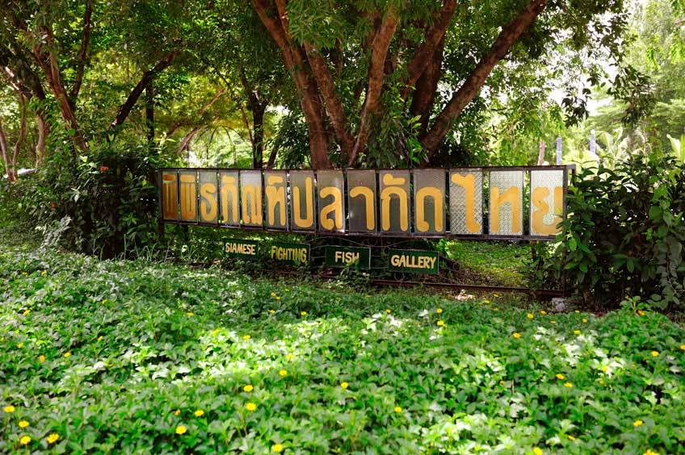

สถานที่

พิพิธภัณฑ์ช้างเอราวัณ
ภายในพิพิธภัณฑ์ช้างเอราวัณมีสถาปัตกรรมที่งดงาม มีความวิจิตรประณีต ตระการตามากๆ โดยแบ่งพื้นที่ออกเป็น 3 ส่วน คือ ชั้นล่างสุดหรือชั้นใต้ดิน ชื่อว่า ชั้นสุวรรณภูมิ ชั้นตรงกลาง ชื่อว่า ชั้นโลก และชั้นบนสุด ชื่อว่า ชั้นจักรวาล

เมืองโบราณ สมุทรปราการ
นักท่องเที่ยวจะได้ชมความงดงามของสถาปัตยกรรมต่างๆ สิ่งก่อสร้างที่ตั้งอยู่ในเมืองโบราณนั้น มีทั้งที่รื้อถอนจากของจริงมาไว้ และจำลองขึ้นมาใหม่ ใครที่สนใจเรื่องราวของประวัติศาสตร์ ความสวยงามของสถาปัตยกรรมไทย แวะมาเที่ยว ถ่ายรูปสวยๆ

พิพิธภัณฑ์ปลากัดไทย
พิพิธภัณฑ์ปลากัดไทย ตั้งอยู่ที่ บางกระเจ้า ค่ะ โดยที่พิพิธภัณฑ์แห่งนี้จัดแสดงปลากัดสวยงามให้ได้ชมกัน รวมถึงให้ความรู้เกี่ยวกับปลากัดสายพันธุ์ต่างๆ จำนวนมาก นอกจากนี้ยังมีสถาปัตยกรรมเรือนไทยประยุกต์ และเส้นทางศึกษาธรรมชาติ ให้ได้เที่ยวชมอีกด้วย